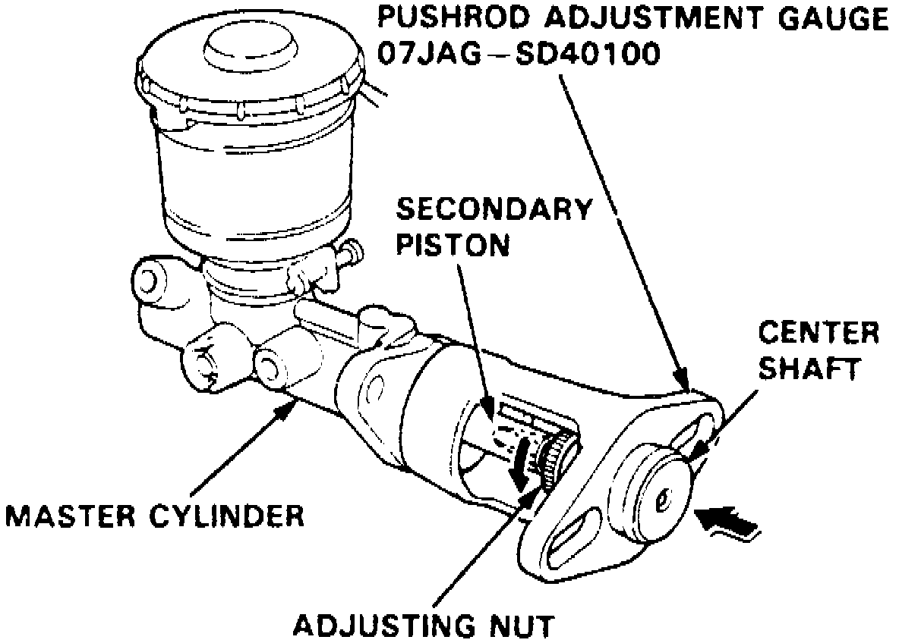
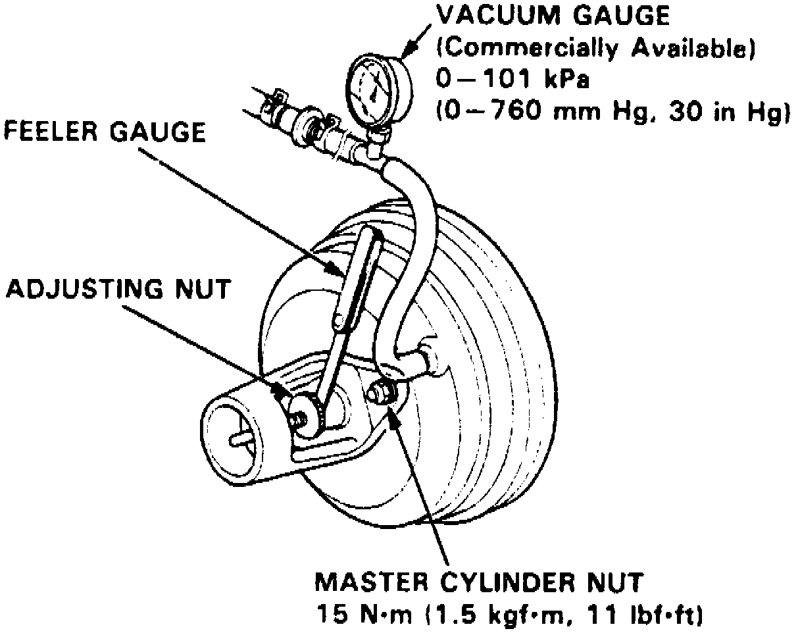
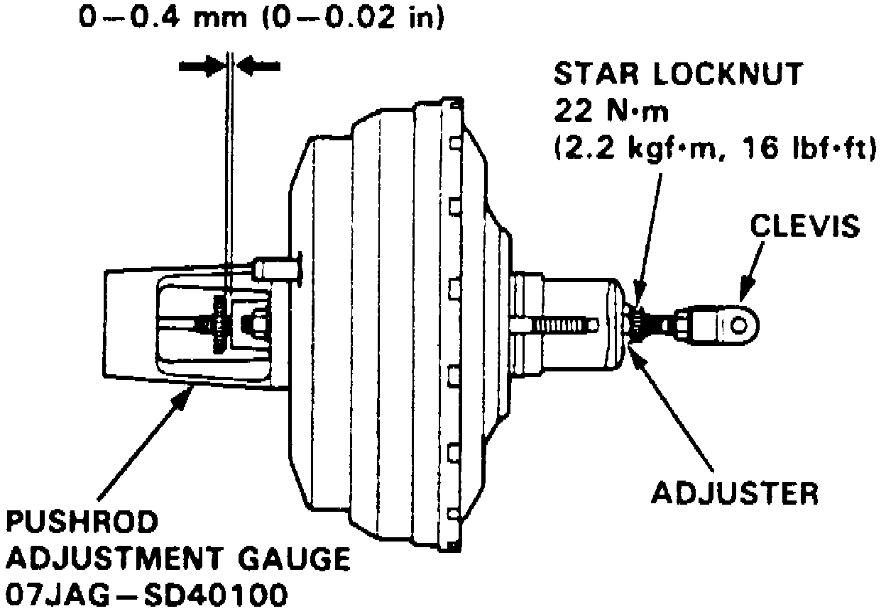

Brake Master Cylinder: Adjustments
Note: Master cylinder pushrod-to-piston clearance must be checked, and adjusted if necessary, before installing master cylinder.1. Remove master cylinder as outlined under Master Cylinder /Service and Repair.
Fig. 1 Pushrod Adjustment Tool Position:

2. Position pushrod adjustment gauge tool No. 07JAG-SD40100, or equivalent onto master cylinder. Using gauge tool adjusting nut, push in center shaft of tool until top of it contacts end of secondary piston, Fig. 1.
Fig. 2 Gauge Body To Adjustment Nut Clearance Measurement:

3. Without disturbing center shaft's position, install pushrod adjustment gauge tool upside down on booster, Fig. 2.
4. Hold tool in place using master cylinder nuts, torque master cylinder nuts to 11 ft. lbs.
5. Connect suitable vacuum gauge to booster engine vacuum supply, then maintain engine speed that will deliver 20 inch Hg vacuum to booster, Fig. 2.
6. Using suitable feeler gauge measure clearance between gauge body and adjusting nut, Fig. 2.
7. If clearance between gauge body and adjusting nut is 0.02 inch (.4 mm), pushrod to piston clearance is 0 mm and adjustment is not necessary.
If clearance between gauge body and adjusting nut is 0 mm, pushrod to piston clearance is 0.02 inch (.4 mm) or more and adjustment is necessary.
Fig. 3 Pushrod Clearance Adjustment:

8. If adjustment is necessary, loosen star locknut and turn adjuster in or out, Fig. 3. Adjust clearance while vacuum is applied to booster and hold clevis while adjusting.
9. Torque star locknut to 16 ft. lbs. and remove gauge tool.
Fig. 4 Booster Pushrod Length Adjustment:

10. If booster is removed, adjust pushrod length as shown in Fig. 4.